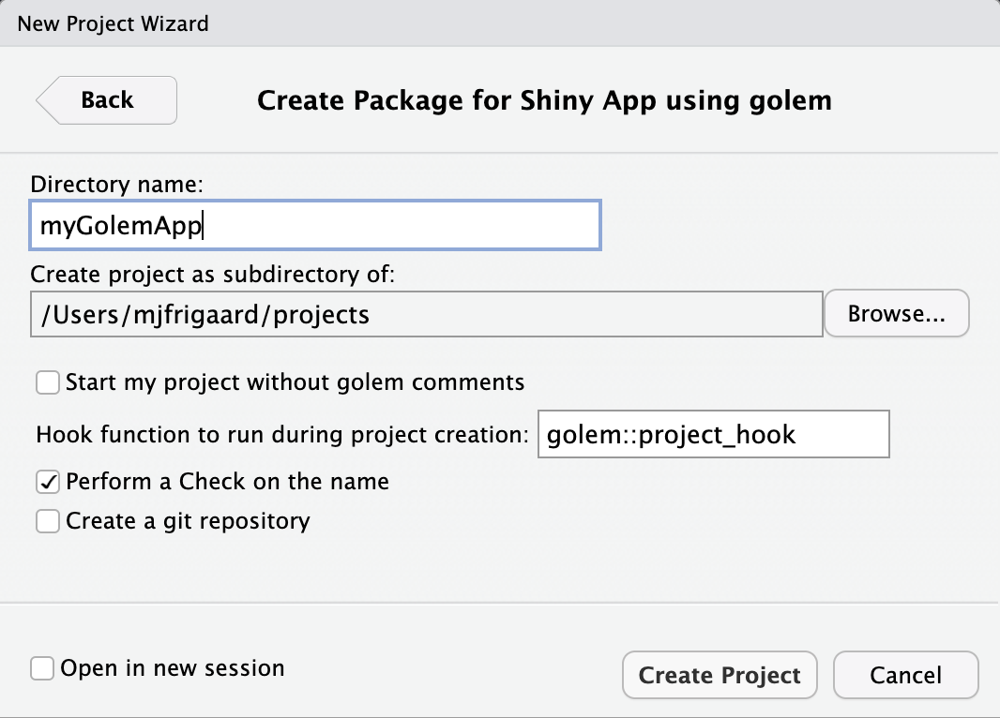
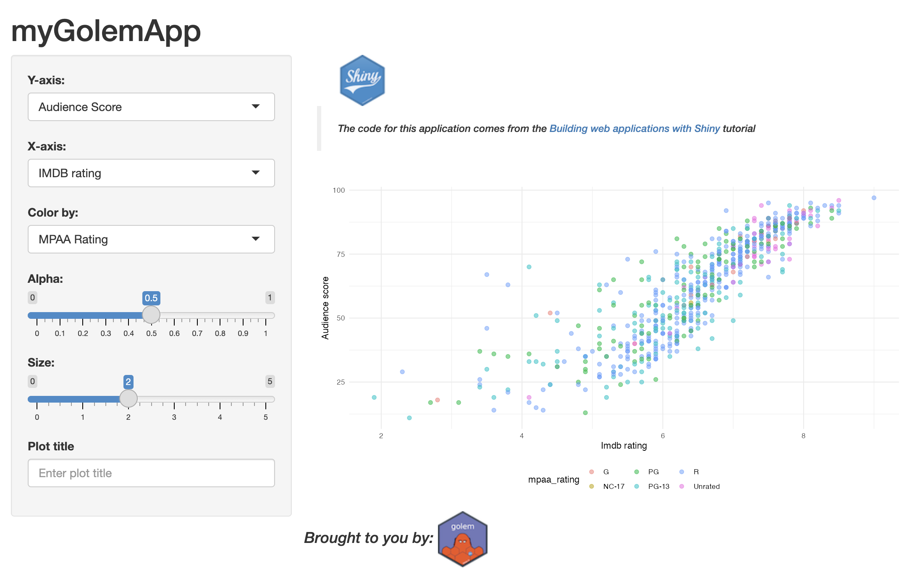
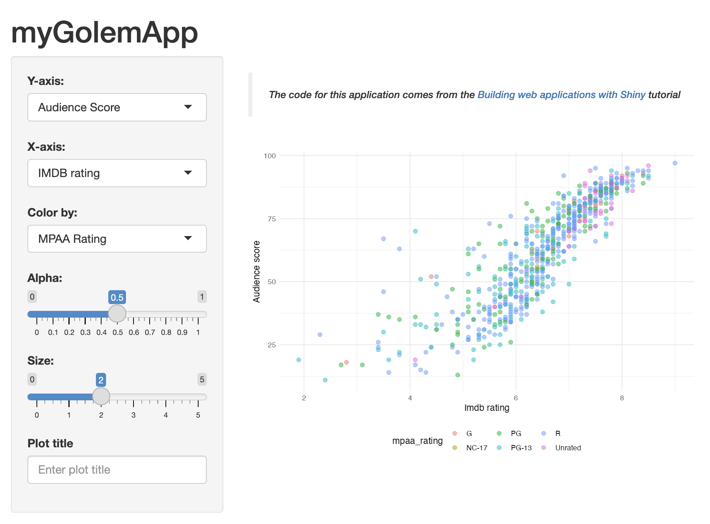
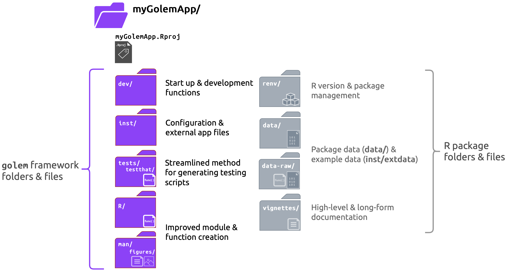

install.packages("golem")
library(golem)
golem::create_golem(path = "myGolemApp")Shiny frameworks (part 3, golem)
shiny
code
packages
This is the third post in a series on building shiny apps with various frameworks. In this example, I’ll be using golem to build a ‘production-grade’ shiny app myGolemApp.
I’ve previously built 1) a ‘minimal’ shiny app (VanillaApp), and 2) a shiny app built as an R package (myPkgApp). The GitHub repo with all shiny app setups is here.
Framework comparisons
The original post that inspired this series compares ‘vanilla shiny’ (bare-bones shiny application), golem, leprechaun, and rhino across a series of dimensions (framework reliability, target type of developer, overall developing experience, etc.).
I’ll continue focusing on three technical areas: Start, Build, and Use.
Start covers the steps required to begin building the shiny app within the framework (from the console and IDE), and any additional packages or dependencies.
Build covers the development process, which includes writing and storing code, data, external resources (like CSS or JavaScript), testing, etc.
Use shows how developers can launch their application using the given framework/package locally (i.e., within the RStudio (Posit) IDE), common workflow tips, and anything I found confusing while building the application.
myGolemApp
Start
To create a new golem app from the console, enter the following:
If creating a golem app from RStudio’s New Project Wizard, the following defaults are available:

golem shiny appThe initial folder structure for a new golem application is below:
myGolemApp
├── DESCRIPTION
├── NAMESPACE
├── R
│ ├── app_config.R
│ ├── app_server.R
│ ├── app_ui.R
│ └── run_app.R
├── dev
│ ├── 01_start.R
│ ├── 02_dev.R
│ ├── 03_deploy.R
│ └── run_dev.R
├── inst
│ ├── app
│ │ └── www
│ │ └── favicon.ico
│ └── golem-config.yml
├── man
│ └── run_app.Rd
├── myGolemApp.Rproj
├── renv
│ ├── activate.R
│ ├── sandbox
│ │ └── R-4.2
│ └── settings.dcf
└── renv.lock
12 directories, 17 files
dev/ scripts
The dev/ folder contains golem‘s ’guided tour’ scripts and dev/run_dev.R:
-
Below are the scripts to guide you through developing your
golemapp and thedev/run_dev.Rcode.-
dev/01_start.Ropens automatically
myGolemApp/dev/ ├── 01_start.R ├── 02_dev.R ├── 03_deploy.R └── run_dev.R 1 directory, 4 files-
dev/run_dev.Ris for running the ‘development version’ of the application.
-
If you’ve been following along with the post in this series, you should recognize most of the items in the dev/ scripts. Even if you are familiar with R package developement, you can think of these scripts as a ‘shiny app development checklist.’
DESCRIPTION
In the dev/01_start.R script, users build a DESCRIPTION file with golem::fill_desc()
-
fill_desc()usesdescpackage, so the sections are entered in akey = "value"format- Below are the values I’ve used in
myGolemApp
Code
golem::fill_desc( pkg_name = "myGolemApp", pkg_title = "An example goelm app", pkg_description = "A working example of the golem package.", author_first_name = "Martin", author_last_name = "Frigaard", author_email = "mjfrigaard@pm.me", repo_url = NULL # The URL of the GitHub Repo (optional) )- In
dev/02_dev.R, theattachment::att_amend_desc()will “AmendDESCRIPTIONwith dependencies read from package code parsing”. Ifattachmentis not installed, useinstall.package('attachment')
- Below are the values I’ve used in
Package files
-
dev/01_start.Ralso contains theusethisfunctions for for creating common package development files:LICENSE:
usethis::use_mit_license()README:
usethis::use_readme_rmd()Code of Conduct:
usethis::use_code_of_conduct()Lifecycle badge:
usethis::use_lifecycle_badge("Experimental")NEWS.md:
usethis::use_news_md(open = FALSE)Git:
usethis::use_git()
golem files
-
The
golemfunctions indev/01_start.Rare for setting thegolemoptions and using recommended tests.Options:
golem::set_golem_options()Tests (with
testthat):golem::use_recommended_tests()Favicon:
golem::use_favicon()Helper functions:
golem::use_utils_ui()andgolem::use_utils_server()creategolem’s UI (R/golem_utils_ui.R) and server (R/golem_utils_server.R) utility functions in theR/folder
App files
The dev/02_dev.R file covers development, so most of the golem functions are for creating files in the R/ and inst/ folders:
-
The initial
R/scripts in a newgolemapp:R/ ├── app_config.R ├── app_server.R ├── app_ui.R └── run_app.R 1 directory, 4 files-
R/app_ui.RandR/app_server.Raregolem’s version ofui.Randserver.R
Click on Code to view code in
R/app_ui.RCode
#' The application User-Interface #' #' @param request Internal parameter for `{shiny}`. #' DO NOT REMOVE. #' @import shiny #' @noRd app_ui <- function(request) { tagList( # Leave this function for adding external resources golem_add_external_resources(), # Your application UI logic fluidPage( h1("BareBonesGolem") ) ) } #' Add external Resources to the Application #' #' This function is internally used to add external #' resources inside the Shiny application. #' #' @import shiny #' @importFrom golem add_resource_path activate_js favicon bundle_resources #' @noRd golem_add_external_resources <- function() { add_resource_path( "www", app_sys("app/www") ) tags$head( favicon(), bundle_resources( path = app_sys("app/www"), app_title = "BareBonesGolem" ) # Add here other external resources # for example, you can add shinyalert::useShinyalert() ) }Click on Code to view code in
R/app_server.RCode
#' The application server-side #' #' @param input,output,session Internal parameters for {shiny}. #' DO NOT REMOVE. #' @import shiny #' @noRd app_server <- function(input, output, session) { # Your application server logic }-
run_app.Ris an exported function that is available for me to run my app after I’ve installed the package:
-
Add code files
-
golemhas wrappers for creating modules and helper functions in theR/folder:## Add modules ---- ## Create a module infrastructure in R/ golem::add_module(name = "name_of_module1", with_test = TRUE) golem::add_module(name = "name_of_module2", with_test = TRUE) ## Add helper functions ---- ## Creates fct_* and utils_* golem::add_fct("helpers", with_test = TRUE) golem::add_utils("helpers", with_test = TRUE)-
with_test = TRUEensures these functions will also create test files intests/
-
Configure
-
golemusesapp_sys()(a wrapper aroundsystem.file()) to add external resources to the application-
app_sys()is included in theR/app_config.Rfile
# Access files in the current app app_sys <- function(...) { system.file(..., package = "myGolemApp") } -
-
get_golem_config()is also included in theR/app_config.RfileClick on Code to view
get_golem_config()Code
# Read App Config get_golem_config <- function( value, config = Sys.getenv( "GOLEM_CONFIG_ACTIVE", Sys.getenv( "R_CONFIG_ACTIVE", "default" ) ), use_parent = TRUE, # Modify this if your config file is somewhere else file = app_sys("golem-config.yml") ) { config::get( value = value, config = config, file = file, use_parent = use_parent ) }
Testing
The tests/ folder is created in dev/01_start.R with golem::use_recommended_tests(), which is a wrapper around usethis::use_testthat()
golem::use_recommended_tests()adds thespellingpackage to ourDESCRIPTIONand updates theWORDLIST-
The tests
golemcreates in thetests/testthat/folder can serve as a nice guide for users new totestthat- The
testsfolder uses thetestthatframework
tests/testthat/ ├── _snaps ├── test-golem-recommended.R ├── test-golem_utils_server.R └── test-golem_utils_ui.R 2 directories, 4 files- In
dev/02_dev.Rthegolem::use_utils_ui()andgolem::use_utils_server()functions also include awith_test = TRUEargument, which creates atests/folder (if it doesn’t already exist)
- The
External
The inst/ file initially has the following contents/structure:
inst/
├── WORDLIST
├── app/
│ └── www/
│ └── favicon.ico
└── golem-config.yml The golem-config.yml file is covered below, but the inst/app/ folder works just like the inst/extdata folder (it is loaded when the package is installed and makes these files available to the application).
-
The
R/app_config.Rfile contains two functions:app_sys()(covered above) andget_golem_config(), which reads theinst/golem-config.ymlconfiguration filedefault: golem_name: golex golem_version: 0.0.0.9000 app_prod: no production: app_prod: yes dev: golem_wd: !expr here::here()-
golem-config.ymlgives access to the app version, name, and (development) working directory, so it can be used to add “production-only elements” and is “shareable across golem projects”
-
dev/02_dev.Rincludes golem wrappers for including CSS, JavaScript, and SASS files to theinst/app/www/folder:
Deploy
-
The final step in the guided tour contains functions for deploying a new application to Posit Connect or Docker (it opens automatically after completing the
dev/02_dev.R)Click on Code to view code in
dev/03_deploy.RCode
## Run checks ---- ## Check the package before sending to prod devtools::check() rhub::check_for_cran() # Deploy ## Local, CRAN or Package Manager ---- ## This will build a tar.gz that can be installed locally, ## sent to CRAN, or to a package manager devtools::build() ## RStudio ---- ## If you want to deploy on RStudio related platforms golem::add_rstudioconnect_file() golem::add_shinyappsio_file() golem::add_shinyserver_file() ## Docker ---- ## If you want to deploy via a generic Dockerfile golem::add_dockerfile_with_renv() ## If you want to deploy to ShinyProxy golem::add_dockerfile_with_renv_shinyproxy()- RStudio (Posit) Connect
- Docker
Build
Building an application with golem is very similar to developing an R package. New code files are placed in R/, external resources are placed in inst/, etc. I’ll cover creating modules and utility functions in the next section.
Writing code
New modules and utility functions can be created with golem::add_module() or golem::add_utils()/golem::add_fct()
-
These functions are added to the
R/folder and include@noRdby default (which must be removed create the.Rdfiles in theman/folder)# UI module template ------------------- #' test UI Function #' #' @description A shiny Module. #' #' @param id,input,output,session Internal parameters for {shiny}. #' #' @noRd #' #' @importFrom shiny NS tagList # server module template --------------- #' test Server Functions #' #' @noRd -
UI module functions end with a
_uisuffix:Click on Code to view code in
R/mod_plot.R#' plot UI Function #' #' @param id #' #' @return shiny UI module #' @export mod_plot_ui #' #' @importFrom shiny NS tagList tags #' @importFrom shiny plotOutput verbatimTextOutput mod_plot_ui <- function(id) { ns <- shiny::NS(id) shiny::tagList( shiny::tags$br(), shiny::tags$blockquote( shiny::tags$em( shiny::tags$h6( "The code for this application comes from the ", shiny::tags$a("Building web applications with Shiny", href = "https://rstudio-education.github.io/shiny-course/" ), "tutorial" ) ) ), shiny::plotOutput(outputId = ns("scatterplot")) ) } -
Server module functions end with a
_serversuffix:Click on Code to view code in
R/mod_plot.RCode
#' plot Server Functions #' #' @param id module id #' @param var_inputs inputs from mod_var_input #' #' @return shiny server module #' @export mod_plot_server #' #' @importFrom shiny NS moduleServer reactive #' @importFrom tools toTitleCase #' @importFrom shiny renderPlot #' @importFrom stringr str_replace_all #' @importFrom ggplot2 labs theme_minimal theme mod_plot_server <- function(id, var_inputs) { shiny::moduleServer(id, function(input, output, session) { movies <- myGolemApp::movies inputs <- shiny::reactive({ plot_title <- tools::toTitleCase(var_inputs$plot_title()) list( x = var_inputs$x(), y = var_inputs$y(), z = var_inputs$z(), alpha = var_inputs$alpha(), size = var_inputs$size(), plot_title = plot_title ) }) output$scatterplot <- shiny::renderPlot({ plot <- point_plot( df = movies, x_var = inputs()$x, y_var = inputs()$y, col_var = inputs()$z, alpha_var = inputs()$alpha, size_var = inputs()$size ) plot + ggplot2::labs( title = inputs()$plot_title, x = stringr::str_replace_all(tools::toTitleCase(inputs()$x), "_", " "), y = stringr::str_replace_all(tools::toTitleCase(inputs()$y), "_", " ") ) + ggplot2::theme_minimal() + ggplot2::theme(legend.position = "bottom") }) }) } ## To be copied in the UI # mod_plot_ui("plot_1") ## To be copied in the server # mod_plot_server("plot_1")- See all of the modules I use in this application here on GitHub examples
- See all of the modules I use in this application here on GitHub examples
-
Include tests for new modules and functions using the
with_test = TRUEargumenttests/testthat/ ├── _snaps ├── test-golem-recommended.R ├── test-golem_utils_server.R ├── test-golem_utils_ui.R ├── test-mod_plot.R ├── test-mod_plot_utils_server.R └── test-mod_var_input.R 2 directories, 6 files
Adding resources
-
To include other files (like images), add the image file to
inst/app/www/, then add thewww/to the path (see example UI code below)# add icon shiny::tags$img(src = "www/shiny.png") -
If I wanted to include images in their own folder (like
images/), I can usegolem::addResourcePath()to add the name of the sub-folder toinst/app/# add icon golem::add_resource_path( prefix = 'images', directoryPath = system.file('app/images', package = 'myGolemApp')) -
Now I can add the image file to the
inst/app/www/images/folder and include the following code in the UI:# add icon shiny::tags$img(src = "www/images/golem-hex.png") -
In
R/app_ui.R, theapp_ui()function contains the UI layout functions (fluidPage(),sidebarLayout(), etc.), and a call togolem_add_external_resources():Click on Code to view the updated
R/app_ui.RCode
#' The application User-Interface #' #' @param request Internal parameter for `{shiny}`. #' DO NOT REMOVE. #' @import shiny #' @noRd app_ui <- function(request) { shiny::tagList( # Leave this function for adding external resources golem_add_external_resources(), # Your application UI logic shiny::fluidPage( shiny::tags$h1("myGolemApp"), shiny::sidebarLayout( shiny::sidebarPanel( mod_var_input_ui("vars") ), shiny::mainPanel( # add shiny hex in www/ shiny::tags$img(src = "www/shiny.png"), mod_plot_ui("plot"), # add golem hex (in www/images/) shiny::fluidRow( shiny::tags$em(shiny::tags$h4( "Brought to you by: ", shiny::tags$img(src = "www/images/golem-hex.png") )) ) ) ) ) ) }Click on Code to view
golem_add_external_resources()Code
# this is also included in the app_ui.R script golem_add_external_resources <- function() { add_resource_path( "www", app_sys("app/www") ) tags$head( favicon(), bundle_resources( path = app_sys("app/www"), app_title = "myGolemApp" ) # Add here other external resources # for example, you can add shinyalert::useShinyalert() ) } Now when I run
devtools::load_all(),devtools::document(), install/restart, and load the package, I see the images properly rendered with the application:

myGolemAppUse
If you typically build shiny apps in a single app.R file (or in ui.R and server.R files), the golem framework might seem overwhelming. I’ll give a quick overview of some areas I found confusing when I started using goelm:
-
golemapps are run using themyGolemApp::run_app()function (included in theR/folder)

myGolemApp- While developing,
golemalso comes with arun_devfunction that reads theR/run_dev.Rfile and evaluates the code.
Click on Code to view code in dev/run_dev.R
Code
#' Run run_dev.R
#'
#' @param file File path to `run_dev.R`. Defaults to `R/run_dev.R`.
#' @inheritParams add_module
#'
#' @export
#'
#' @return Used for side-effect
run_dev <- function(
file = "dev/run_dev.R",
pkg = get_golem_wd()
) {
# We'll look for the run_dev script in the current dir
try_dev <- file.path(
pkg,
file
)
# Stop if it doesn't exists
if (file.exists(try_dev)) {
run_dev_lines <- readLines(
"dev/run_dev.R"
)
} else {
stop(
"Unable to locate dev file"
)
}
eval(
parse(
text = run_dev_lines
)
)
}dev/containsgolem‘s ’guided tour’ scripts (01_start.R,02_dev.R,03_deploy.R) andrun_dev.R(covered above) -dev/is also where to place R scripts that aren’t intended to be part of the application package.R/: the primary app files for the UI and server are stored in theR/folder (R/app_ui.R,R/app_server.R,R/run_app.R), as well as the configuration function (R/app_config.R): - Use theR/app_config.Rto configure the application to be run on different locations (computers or servers).inst/: theinst/folder holds thegolem-config.ymland location of any external app files.
The golem workflow is similar to building an R package:
write functions (modules, helper functions, etc.)
load, document, check, test, install, etc.
then render application (either with
myGolemApp::run_app()orgolem::run_dev())
Recap
Generally speaking, golem’s start-up scripts save time and serves as a gentle introduction to some of the functions used in R package development. The golem::add_ functions are an area where (I think) golem really separates itself from standard R packages. Having dedicated shiny development functions (and the app/inst/www folder) reduces the cognitive overhead of mapping the standard R package development functions (i.e., those from usethis and devtools) into shiny-specific development.

myGolemAppgolem is a popular framework for a reason–it’s designed to allow developers to build a shiny application and R package simultaneously. Added bonuses include taking advantage of RStudio’s build tools, great documentation, and user-guides..